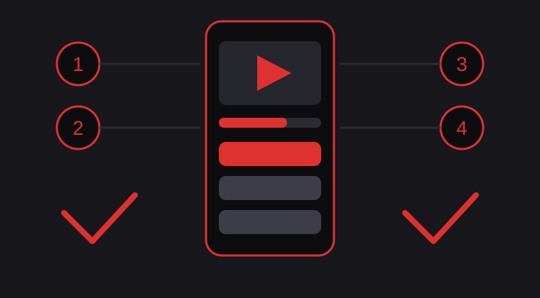

Installing this app is a manual job, because an APK file does not come from the Play Store. Android asks you to allow the install yourself, and that one setting is where most people get stuck. This guide walks through the whole process in order, in plain words, for CapCut Pro MOD APK v19.9.0. The full job takes about five minutes on a normal connection.

Before You Start
Check three things first. Your phone needs Android 6.0 or later, and Android 10 or later works best. The file is 307.45 MB, so keep at least 1 GB of free storage for the download, the install, and room for video projects. If you already edit in the normal CapCut app, export and back up any project you care about now, because a different build may not open your account projects later. If you want the short picture first, the home page of this guide site gives the overview and the full facts table for the current version.
Install Steps
- Get the file from the main site. This guide site hosts no app files. The download lives on the main CapctProAPK site, so open it on your phone and use its download button for the current build. Wait for the file to finish before you move on. A half finished download is the top cause of install errors.
- Allow installs from your browser. Open Android Settings, then Apps, then Special app access, then Install unknown apps. Pick the browser you used for the download and turn on Allow from this source. Android asks this once per app, so you only do it the first time.
- Install the file. Open your Downloads folder or tap the finished download in the browser. Tap the APK file, then tap Install. Android may show a short scan screen first. That is normal. Wait until the phone says the app is installed.
- Open the app. Tap Open on the install screen, or find CapCut in your app list. The editor opens on the home screen with the New project button, the same as the standard app.
- Grant the permissions it asks for. The editor needs access to your photos and videos so it can show your clips, and to the microphone only if you record voiceovers. Allow the storage and media permissions. You can skip anything else and still edit normally.
First Open Checklist
Start a test project before you edit anything real. Add one short clip, drop in a Pro transition, write a caption with a premium text style, and export it. Check the export for a watermark, because a clean export confirms the Pro tools are open. If every step works on the test clip, the install is complete and you can delete the downloaded APK file to free the space again.
Common Install Problems and Fixes
Install blocked or the button does nothing
This almost always means the allow setting from step 2 is off, or it is on for a different browser than the one you downloaded with. Go back to Install unknown apps, check the exact browser you used, and try the file again.
App not installed message
Android shows this when a different CapCut build with a conflicting signature is already on the phone. Export your projects first, remove the existing CapCut app, restart the phone, and then install the MOD file once more.
Parse error or invalid package
A parse error means the file is broken or too old for your Android version. Delete the file, check that your phone runs Android 6.0 or later, and download the file again on a stable connection. Do not rename or edit the file name before installing.
The app closes right after opening
Clear the app cache in Settings, then Apps, then CapCut, then Storage. Restart the phone and open the app again. Phones very low on free storage crash editors often, so free up space before blaming the build.
One honest reminder: this is an unofficial modified build. The in-app Pro editing tools are unlocked, but online features such as cloud storage, account sync, and some AI credits may not work. That limit comes from how MOD builds work, not from your install steps.
What to Read Next
Once your install works, the Pro features page shows what each unlocked tool does, so you can try the premium effects, captions, and 4K export in a sensible order instead of tapping everything at random.